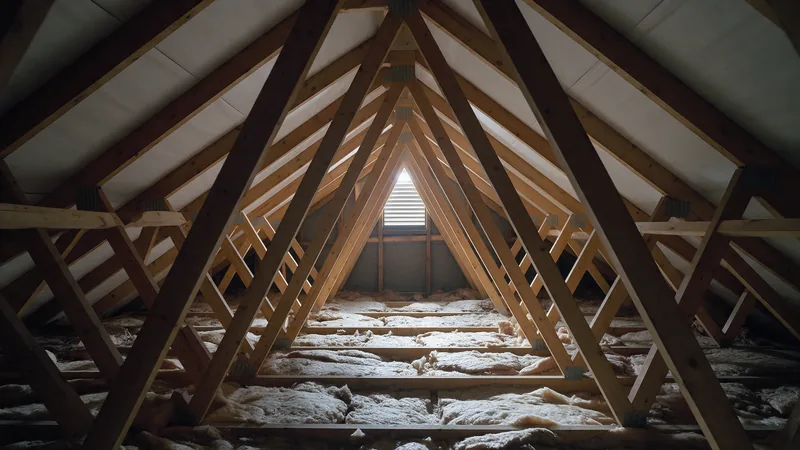
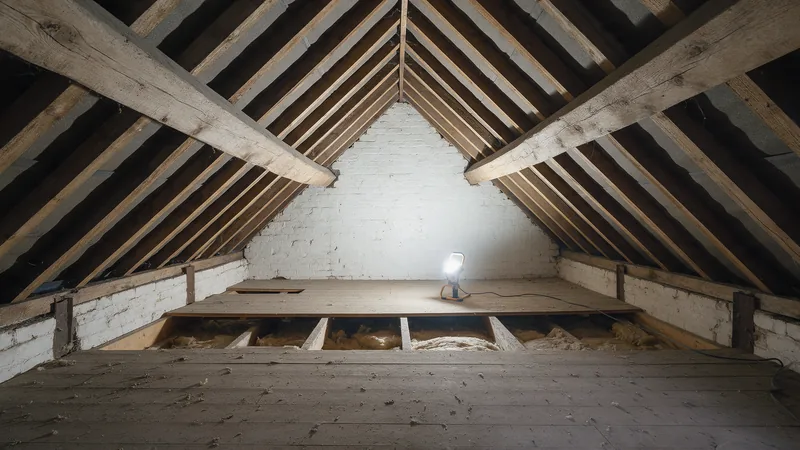

Before you ring anybody
Is my loft suitable?
Six things, a torch and twenty minutes. You can answer five of them yourself and the sixth is a question about your own house rather than about building. Nothing here gives you a verdict, because a verdict needs somebody up there with a tape. What it does is tell you what we are going to ask, so the first conversation is a useful one.
A demo number from the range Ofcom keeps for television and film. It rings nobody. Loft conversions are not an emergency trade and there is no response time printed anywhere on this site, because any number we put here would be made up.
The list
Take a torch up and work down it.
Tick them off as you go if it helps. There is no score at the bottom and the ticks do not add up to anything: it is a list to walk round with, not a test to pass.
No score, on purpose. Six answers on the back of an envelope is exactly the right amount of information for a first phone call. What happens next is somebody comes and measures, looks at the landing, and tells you straight, including when the answer is that a boarded loft would serve you better.
Question one, drawn
Why the number at the ridge is not the answer.
Two roofs over the same floor, with the standing line at the same height in both, because it is the same person walking about.
Same floor · same standing line · shallower pitch
Height at the ridge is not the number that counts
Plenty of lofts measure well at the ridge and still give you a narrow strip of room with a sloping cupboard either side of it. The ceiling falls away from the ridge at the pitch of the roof, so on a shallow roof it runs out of height a short way out from the middle. That is the number that decides what you get, and it is the one nobody measures from the hatch.
Same floor · same standing line · steeper pitch
The same house, and nearly all of it is a room
Steeper pitch, same footprint, and the shaded part runs most of the way out to the eaves. The bit at each side that is too low never goes to waste either: it is where the wardrobes, the drawers and the eaves cupboards go, so the useful floor is wider again than the part you can stand up in.
Question two, drawn and photographed
The two things you will see up there.
Have a look along the loft before you read the drawings. If it is full of criss crossing timber you have the first one. If you can see straight down it, you have the second.
Newer houses · slender timbers · a W across the space
It is not a no, it is a bigger first stage
Most houses built from about the sixties on have a roof made of thin factory made trusses, and the W of struts inside each one crosses the space you want to stand in. They cannot simply be cut out: each one is carrying the roof and the ceiling at the same time. The job is to put a new floor and new support in first, so the roof is held a different way, and then the struts come out. More work at the start, and then exactly the same room at the end.
Older houses · purlins up the slopes · clear middle
The space is already there
Older roofs are cut on site: plain rafters sitting on a purlin or two that run the length of the roof and land on the gable walls. Nothing crosses the middle, so you can walk about in there the day you first put your head through the hatch. The floor still has to be built, because ceiling joists hold up a ceiling and nothing else, but the shape of the room is sat there waiting.

Generated photoA trussed roof. The W in each frame is in the way, and it is carrying the roof and the ceiling at the same time, so it cannot just be cut out.

Generated photoA cut roof. Purlins up the slopes, nothing across the middle, and the shape of the room sat there waiting for a floor.
Question three, drawn
The stairs are the question that catches people.
A flight needs clear air above the steps all the way up, and that line runs parallel to the flight. So it is the slope of the roof above your particular staircase that decides this.
Same flight · same rise · wrong direction
You cannot stand up at the top of it
Run the flight so it climbs towards the eaves and the roof comes down to meet you exactly where you are standing tallest. The shaded wedge is where the slope cuts below the line the flight needs over the steps. No amount of ridge height fixes it, because at that end of the room there is no ridge above you. This is the commonest reason a loft that measures fine still will not work as drawn.
Same flight · same rise · comes up in the middle
It arrives where the roof is highest
Same flight, turned round, so you come up into the middle of the room where there is air above your head. That is usually the answer, and it is why the stairs get drawn before anything else: where they land decides where the bed goes, where the shower can go and whether the landing below keeps its window. Sometimes it means taking a slice off a bedroom rather than off the landing, and that is a conversation rather than a surprise.
Saying no
What happens when the answer is no.
You hear it on the first visit
- Before anybody has paid for drawings or a structural engineer.
- With the reason, and usually drawn on a bit of paper so it makes sense.
- With what would have to change for it to work, if anything could.
- And with what we would do instead, which is often boarding it out properly.
What we are not going to do
- Tell you a loft is suitable off a photograph taken at the hatch.
- Print a head height on this website as though it settled it.
- Take a deposit for drawings on a loft we have not stood up in.
- Leave the stairs to be worked out once the room is half built.
Questions
Asked at this stage.
Can you tell me from a photograph?
Some of it, and not the part that decides it. A picture taken from the hatch tells us what sort of roof you have, whether there is a tank, and roughly what the space looks like, which is genuinely useful before a visit.
What it cannot tell us is how the height holds up as you walk out from the ridge, or what the roof is doing over the line your staircase would climb. Both of those need somebody standing in there with a tape, and both of them are what turn a maybe into a yes or a no. So send the photograph by all means, and then let somebody come.
My neighbour has done theirs, so mine must be fine?
It is a good sign and it is not a guarantee. Two houses on the same street, built at the same time, can have different roof structures if one has had work done, different internal layouts that change where a staircase can go, and different planning positions if one has already used up its permitted development rights on a rear extension.
What your neighbour's conversion does tell you is that the roof shape in principle works and that the council has seen one like it. It is worth mentioning when you ring, and worth asking them who did it and whether it was signed off.
Is there a height below which it is just not worth it?
There is a point where a conversion stops making sense, and the honest answer is that it is not a single number. It is the combination of the height, the pitch, the span and where the stairs can come, and two lofts with the same ridge height can land on opposite sides of it.
What we will say is that the people who get the best result are the ones who got told no on one option and yes on another, rather than the ones who were told yes to everything. If your loft is tight, the first visit is where you find out which of those you are.
Can the floor be lowered or the roof raised?
Both are done and both change the job into something much bigger. Lowering the ceiling of the rooms below means taking those ceilings down and rebuilding them lower, which is a whole floor of disruption for a bit of height. Raising the roof is a planning application and a new roof.
They are real options on the right house and they are not the quiet fix people hope for. If your loft needs one of them to work, you will be told that it does and what it involves, and then it is your decision rather than ours.
What does the first visit cost?
Nothing on this demo, because Raftergill is not a real firm and there is nothing to charge for. On a real site this is where a firm would say plainly whether the first visit is free, whether drawings are paid for separately and what happens to that money if you go ahead.
That is worth asking anybody you ring, and worth getting in writing. A free visit followed by a vague conversation about design fees is the commonest place this goes wrong.
Written your six answers down?
Ring them through or put them in the form. Half of what we would have asked you is already answered, which makes the first visit a much shorter conversation.